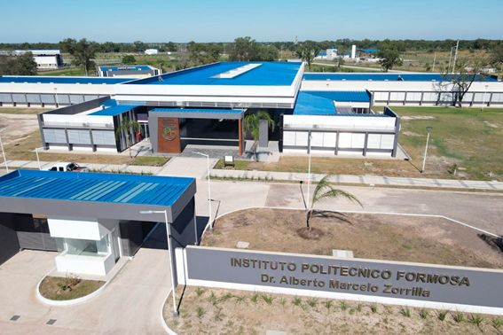

Información Institucional
Reseña Histórica
El Instituto Politécnico Formosa (IPF) fue creado mediante el Decreto N° 18 del año 2018como organismo descentralizado de la Administración Pública Provincial, vinculada al Ministerio de Cultura y Educación de Formosa.
Tiene como finalidad brindar educación superior técnica y tecnológica orientada al desarrollo productivo y social de la provincia, formando profesionales para los sectores del trabajo y la producción.

Misión y Visión
Misión
Brindar educación superior técnica y tecnológicas en áres ocupacionales específicas. promoviendo capacitaciones estratégicas orientadas al desarrollo socio-económico local, regional y nacional.
Visión
Constituirse como centro de referencia del desarrollo científico-tecnológico aplicando al conocimiento y a la producción en la Provincia de Formosa.